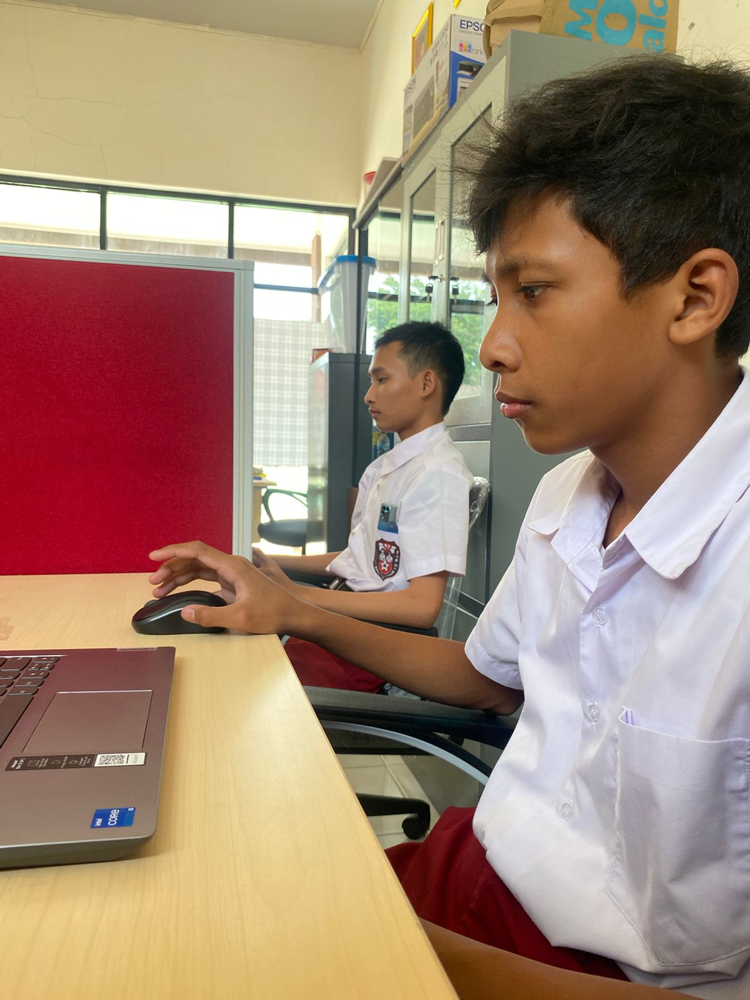

ANBK
ANBK (Asesmen Nasional Berbasis Komputer) adalah salah satu langkah yang harus ditempuh peserta didik untuk dapat lulus menuju jenjang ke yang lebih tinggi dari sebelumnya. Oleh karenanya mereka akan berusaha se-optimal mungkin agar mencapai hasil yang memuaskan nantinya.
Penasaran melihat aksi mereka dalam mengikuti ANBK ini?
